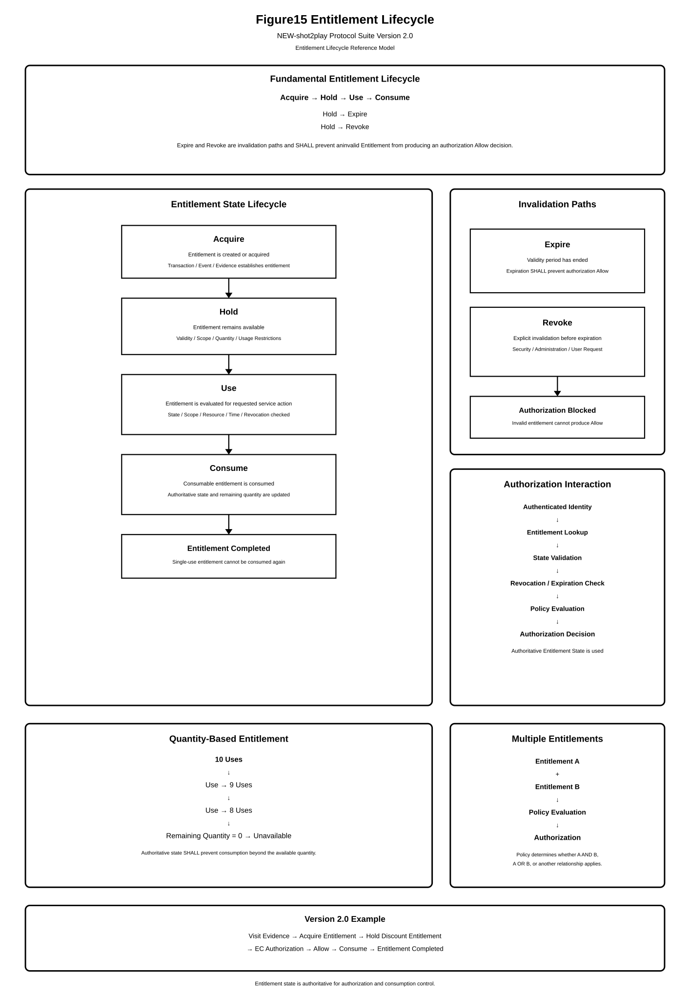
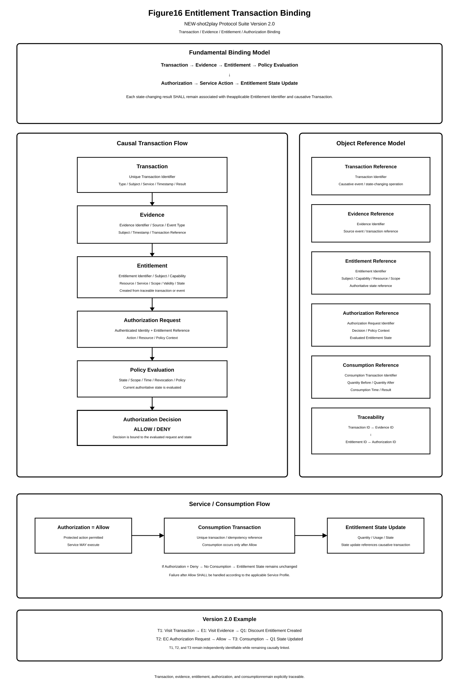

Chapter 05 — Entitlement Protocol
This chapter defines the Entitlement Protocol of the NEW-shot2play Protocol Suite Version 2.0.
The Entitlement Protocol defines an Entitlement as an independent protocol-level object representing a subject's eligibility, capability, permission, benefit, or usage right for a specified service, resource, or operation.
An Entitlement SHALL be represented as an independent protocol object and SHALL remain logically distinguishable from the Authentication Object and Authentication Result.
5.1 Purpose and Scope
The purpose of the Entitlement Protocol is to establish a machine-processable representation of rights and eligibility that can be evaluated independently from the authentication operation.
The Entitlement Protocol covers:
- Entitlement Object definition;
- Entitlement acquisition;
- Entitlement ownership and subject binding;
- Entitlement state;
- Entitlement validity;
- Entitlement scope;
- Entitlement quantity and usage;
- Entitlement consumption;
- Entitlement expiration;
- Entitlement revocation;
- transaction binding;
- policy interaction; and
- authorization interaction.
The protocol MAY be applied to permissions, benefits, coupons, tickets, attendance rights, point balances, service eligibility, resource access rights, or other machine-processable forms of entitlement.
5.2 Entitlement as a Protocol Object
An Entitlement SHALL be represented as an independent logical object.
The Entitlement Object SHALL be identifiable independently of the Authentication Transaction that established the identity of its subject.
The object MAY represent:
- a right to access a service;
- a right to use a resource;
- a benefit associated with a transaction;
- a conditional permission;
- a limited-use capability;
- a monetary or non-monetary benefit; or
- another Service Profile defined eligibility.
The meaning and applicability of an Entitlement SHALL be determined by its attributes, state, and the applicable Policy.
5.3 Entitlement Object Identifier
Each Entitlement Object SHALL have an Entitlement Identifier that uniquely identifies the entitlement within the applicable protocol scope.
The Entitlement Identifier SHALL remain stable for the logical lifetime of the Entitlement unless the protocol explicitly defines an object replacement operation.
An implementation MUST NOT treat an arbitrary authentication identifier as an Entitlement Identifier unless the identifier is explicitly defined as such by the applicable protocol operation.
The Entitlement Identifier MAY be referenced by:
- authorization requests;
- policy evaluation;
- consumption transactions;
- revocation operations;
- audit records; and
- cross-service entitlement operations.
5.4 Entitlement Object Attributes
An Entitlement Object SHOULD contain sufficient attributes to permit its authoritative evaluation.
Representative attributes include:
- Entitlement Identifier;
- Subject Identifier;
- Capability;
- Resource;
- Service;
- Scope;
- Acquisition Time;
- Effective Time;
- Expiration Time;
- Quantity;
- Usage Count;
- State;
- Revocation Status; and
- Transaction Reference.
Additional attributes MAY be defined by a Service Profile provided that such attributes do not conflict with the normative semantics defined by this specification.
5.5 Subject Binding
An Entitlement SHALL be associated with a Subject Identifier.
The Subject Identifier establishes the subject to which the Entitlement applies.
An Entitlement MUST NOT be treated as applicable to an authenticated subject solely because both operations occur within the same session.
The applicable subject relationship SHALL be explicitly established by the Entitlement Object or by an authoritative binding mechanism.
Where the subject binding cannot be established, the Entitlement SHALL NOT satisfy an authorization condition requiring that Entitlement.
5.6 Authentication Independence
The Entitlement lifecycle SHALL be logically independent from the Authentication lifecycle.
Authentication
|
v
Authenticated Identity
Entitlement
|
v
Entitlement State
Authentication establishes identity verification.
Entitlement processing establishes whether the subject possesses a specified right, benefit, capability, or eligibility.
A successful authentication operation SHALL NOT automatically imply that an Entitlement exists.
Conversely, an existing Entitlement SHALL remain a distinct protocol object even when a new authentication operation is performed for the same subject.
5.7 Entitlement Acquisition
An Entitlement MAY be acquired as the result of an authoritative event or transaction.
Representative acquisition events include:
- successful purchase;
- successful registration;
- physical or virtual visit;
- attendance;
- coupon issuance;
- point award;
- completion of a qualifying transaction;
- external business event; or
- another Service Profile defined event.
The acquisition operation SHALL establish the initial Entitlement state and SHALL associate the Entitlement with the applicable subject.
Where acquisition is based on a transaction or event, the Entitlement SHOULD retain a reference to the transaction or event that established it.
5.8 Entitlement Lifecycle

An Entitlement SHALL have an explicit logical lifecycle.
The representative lifecycle is:
Acquire | v Hold | v Use | v Consume | v Expire
An Entitlement MAY transition from Hold to Revoke before normal expiration.
The lifecycle state SHALL be authoritative for determining whether the Entitlement can contribute to an authorization decision.
5.9 Entitlement State
The Entitlement Object SHALL maintain an explicit state sufficient to determine whether the entitlement is currently usable.
Representative states include:
- Acquired;
- Held;
- Active;
- Consumed;
- Expired;
- Revoked; and
- Cancelled.
A Service Profile MAY define additional states provided that the meaning of the normative states remains preserved.
An Entitlement state transition SHALL be attributable to an authoritative event, transaction, or protocol operation.
5.10 Effective Time and Expiration
An Entitlement MAY contain an Effective Time and an Expiration Time.
Where Effective Time is defined, the Entitlement SHALL NOT satisfy an authorization condition before the applicable effective time.
Where Expiration Time is defined, the Entitlement SHALL NOT satisfy an authorization condition after the applicable expiration time.
Time evaluation SHALL use a trusted time source appropriate to the deployment environment.
An implementation SHALL NOT extend the effective validity of an expired Entitlement merely because the subject has successfully authenticated again.
5.11 Quantity and Usage Count
An Entitlement MAY define a Quantity representing the amount of authorized use or benefit associated with the Entitlement.
Where Quantity is defined, the authoritative Entitlement state SHALL maintain sufficient information to determine the remaining available quantity.
An implementation MAY maintain a Usage Count representing the number of completed uses or consumptions.
Where both Quantity and Usage Count are defined, the relationship between them SHALL be determined by the applicable Service Profile.
A request requiring a quantity greater than the remaining available quantity SHALL NOT satisfy an authorization condition requiring that Entitlement.
5.12 Entitlement Use
The Use state represents evaluation or application of an Entitlement for a requested service action.
Use processing MAY verify:
- Subject binding;
- Entitlement state;
- Capability;
- Resource;
- Service;
- Scope;
- Effective Time;
- Expiration Time;
- Revocation Status;
- remaining quantity; and
- applicable usage conditions.
A successful Use evaluation MAY contribute to an Authorization Allow decision.
Use evaluation SHALL NOT by itself modify the authoritative Entitlement state unless the applicable operation explicitly defines a state-changing action.
5.13 Entitlement Consumption
An Entitlement MAY be defined as consumable.
Examples include:
- single-use coupons;
- tickets;
- one-time benefits;
- limited-use service rights;
- attendance rights; and
- point balances.
A successful consumption operation SHALL update the authoritative Entitlement state.
For a single-use Entitlement, successful consumption SHALL prevent the same Entitlement from being successfully consumed again.
Consumption SHALL be associated with the applicable transaction and SHOULD retain sufficient information to establish the relationship between the service action and the state update.
5.14 Consumption Atomicity
Where consumption changes the remaining quantity or otherwise changes authoritative Entitlement state, the state-changing operation SHALL provide atomicity appropriate to the deployment environment.
An implementation SHALL prevent two concurrent service operations from consuming the same single-use Entitlement as though both operations were independently valid.
Where distributed processing is used, the implementation SHALL provide an equivalent consistency mechanism.
A failed consumption operation SHALL NOT leave the Entitlement in a state that incorrectly indicates successful consumption.
5.15 Entitlement Revocation
An Entitlement MAY be revoked before its normal expiration.
Revocation MAY be initiated by:
- security incident response;
- administrative action;
- user request;
- fraud detection;
- business rule;
- service termination;
- entitlement cancellation; or
- another authoritative revocation event.
A revoked Entitlement SHALL NOT satisfy an authorization condition requiring an active Entitlement.
Revocation SHALL be represented in the authoritative Entitlement state and SHALL remain distinguishable from normal expiration.
5.16 Transaction Binding

An Entitlement MAY be established, referenced, consumed, modified, or revoked through a protocol transaction.
Where a transaction establishes or modifies an Entitlement, the Entitlement Object SHOULD retain the applicable Transaction Reference.
The Transaction Reference SHALL permit an implementation to associate the Entitlement state with the authoritative event that created or modified that state.
A transaction reference SHALL NOT by itself establish that an Entitlement remains valid. The authoritative current Entitlement state SHALL remain the basis for validity determination.
5.17 Entitlement State Update
Any operation that changes authoritative Entitlement state SHALL be represented as an explicit state transition.
Representative state-changing operations include:
- acquisition;
- activation;
- consumption;
- quantity adjustment;
- expiration;
- revocation; and
- cancellation.
The resulting state SHALL be authoritative for subsequent authorization evaluation.
An implementation SHALL NOT rely solely on a cached historical Entitlement state when a newer authoritative state is available.
5.18 Cross-Service Entitlement Reuse
An Entitlement MAY be applicable to more than one Service or Resource where such reuse is explicitly permitted by the Entitlement Scope and applicable Policy.
Cross-Service reuse is represented as:
Entitlement
|
+------------------+
| |
v v
Service A Service B
| |
+--------+---------+
|
v
Policy Evaluation
|
v
Authorization
The existence of an Entitlement applicable to one service SHALL NOT automatically make the Entitlement applicable to another service.
The applicable Service, Resource, Scope, and Policy conditions SHALL be evaluated independently for each authorization request.
Where cross-service reuse is permitted, the Entitlement Identifier MAY remain common while the authorization context and applicable Policy differ between services.
5.19 Conditional Entitlement
An Entitlement MAY be subject to conditions that determine when, where, or for which service action the entitlement is applicable.
Representative conditions include:
- service condition;
- resource condition;
- time condition;
- location condition;
- transaction condition;
- device condition;
- risk condition; and
- completion of a preceding event.
A conditional Entitlement SHALL NOT be interpreted as unconditionally valid merely because the Entitlement Object exists.
The applicable Policy SHALL determine whether the conditions have been satisfied for the current authorization request.
5.20 Entitlement and Policy Evaluation
The Entitlement Layer SHALL provide authoritative Entitlement state to the Policy Layer where the applicable Policy requires Entitlement information.
Authenticated Identity
+
Entitlement State
+
Authorization Request
+
Authorization Context
|
v
Policy Evaluation
Policy Evaluation SHALL determine whether the current Entitlement state satisfies the conditions defined by the applicable Policy.
The existence of an Entitlement SHALL therefore be treated as an input to Policy Evaluation rather than as an unconditional Authorization Allow.
5.21 Entitlement and Authorization
An Entitlement MAY contribute to an Authorization Decision when all applicable entitlement and policy conditions are satisfied.
The authorization processing relationship is:
Identity + Entitlement + Policy + Context | v Authorization Evaluation | v Authorization Decision
An Entitlement SHALL NOT by itself bypass Policy Evaluation where a Policy is applicable.
An Authorization Allow decision SHALL be based on the authoritative current Entitlement state.
An expired, revoked, cancelled, invalid, or otherwise inapplicable Entitlement SHALL NOT produce an Allow decision where the Policy requires a valid Entitlement.
5.22 Entitlement Security Requirements
An implementation SHALL protect the integrity, authenticity, and authoritative state of Entitlement Objects.
At minimum, the implementation SHALL:
- protect Entitlement Identifiers against unintended substitution;
- protect Subject Binding against unauthorized modification;
- protect Entitlement state against unauthorized modification;
- prevent unauthorized extension of validity;
- prevent unauthorized restoration of a revoked Entitlement;
- prevent unauthorized replay of a consumption operation;
- maintain transaction traceability for state-changing operations;
- enforce applicable quantity and usage limits; and
- ensure that invalid Entitlement state cannot satisfy an applicable authorization condition.
Where Entitlement state is distributed across multiple processing nodes, the implementation SHALL provide an authoritative state resolution mechanism appropriate to the deployment environment.
5.23 Entitlement Audit and Traceability
Entitlement state changes SHOULD be auditable.
Representative audit information includes:
- Entitlement Identifier;
- Subject Identifier;
- Transaction Identifier;
- previous state;
- resulting state;
- operation type;
- operation timestamp; and
- applicable service or resource.
Audit information SHOULD permit reconstruction of the authoritative Entitlement lifecycle without requiring disclosure of protected credential material.
5.24 Conformance Requirements
An implementation claiming conformance to the Entitlement Protocol SHALL:
- implement an identifiable Entitlement Object;
- maintain an explicit Subject Binding;
- maintain authoritative Entitlement state;
- support applicable lifecycle transitions;
- enforce Effective Time and Expiration Time where defined;
- enforce Revocation Status where defined;
- enforce applicable Quantity and Usage restrictions;
- prevent unauthorized repeated consumption;
- maintain applicable Transaction References;
- evaluate cross-service applicability according to Scope and Policy;
- maintain separation between Authentication and Entitlement state;
- provide Entitlement state to Policy Evaluation where required; and
- prevent an invalid Entitlement from producing an Authorization Allow decision.
5.25 Summary
The Entitlement Protocol defines the Entitlement as an independent protocol-level object representing a subject's right, capability, benefit, or eligibility for a specified service, resource, or operation.
The Entitlement Object has its own identifier, subject binding, state, validity, scope, quantity, usage, transaction references, and revocation status.
The Entitlement lifecycle is independent from authentication and continues to exist as an authoritative state object after the authentication operation has completed.
The protocol further permits Entitlements to be consumed, revoked, evaluated under conditional rules, and reused across multiple services where explicitly permitted.
The resulting architecture is:
Authentication
|
v
Authenticated Identity
|
+----------------------+
| |
v v
Entitlement Policy
| |
+----------+-----------+
|
v
Authorization Evaluation
|
v
Authorization Decision
|
v
Service
This architecture separates identity verification from the independent determination of whether a subject possesses a currently valid right to perform a requested service action.